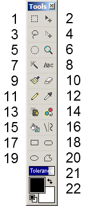

Tools Window
This is where you may choose the active tool which may then be used to edit the image.

-
Rectangle Select
You may use this to define a rectangle or square selection region. Read more at Selection Tools.
-
Move Selected Pixels
You may use this to move pixels that are currently selected as a result of using the various Selection Tools. Read more at Move Tools.
-
Lasso Select
You may use this to draw a freeform selection region. Read more at Selection Tools.
-
Move Selection
You may use this to move the selection without affecting the pixels that are selected. Read more at Move Tools.
-
Ellipse Select
You may use this to draw an ellipse or circle selection region. Read more at Selection Tools.
-
Zoom
This tool can be used to zoom in (left click), zoom out (right click), or zoom the whole canvas around a particular region (draw a rectangle).
-
Magic Wand
You may use this to select areas of the active layer that are similar in color.
-
Text Tool
This tool can be used for placing text on the image.
-
Paintbrush
This tool is selected by default when you start Paint.NET, and is useful for many kinds of freeform drawing.
-
Eraser
You may use this tool to erase areas of the image (it sets the transparency to 0).
-
Pencil
This allows you to edit the active layer pixel-by-pixel. Read more at Pixel Tools.
-
Color Picker
You can use this tool to pick up a color from the active layer and set it as the current primary or secondary color. Read more at Pixel Tools.
-
Clone Stamp
This tool is useful for copying regions of pixels between layers, or within the same layer.
-
Recolor Tool
This tool is useful for replacing one color with another.
-
Paint Bucket
This tool is useful for filling in areas of similar color with a different color.
-
Line / Curve Tool
You may draw straight lines and curved lines with this tool.
-
Rectangle
This can be used to draw rectangles and squares. Read more at Shape Tools.
-
Rounded Rectangle
This can be used to draw rounded rectangles and rounded squares. Read more at Shape Tools.
-
Ellipse
This can be used to draw ellipses and circles. Read more at Shape Tools.
-
Freeform Shape
This can be used to draw a shape with a freeform outline. Read more at Shape Tools.
-
Tolerance Slider
This slider affects how the Magic Wand, the Recolor Tool, and the Paint Bucket operate. It controls how similar colors must be when being operated on by these tools. If this is set to 0%, then only the exact color specified will be considered. If this is set to 100%, then all colors will be included. The default value is 50%.
-
Color Display
This shows what the primary and secondary color are. It also allows quick buttons for resetting to black and white, and for swapping the primary and secondary colors.
Copyright © 2005 Rick Brewster, Chris Crosetto, Tom
Jackson, Michael Kelsey, Brandon Ortiz, Craig Taylor, Chris Trevino, and Luke Walker. Portions Copyright
© 2005 Microsoft Corporation. All Rights Reserved.